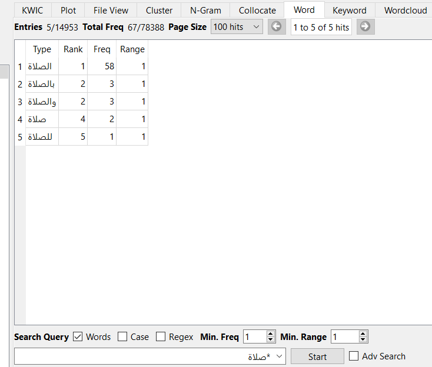
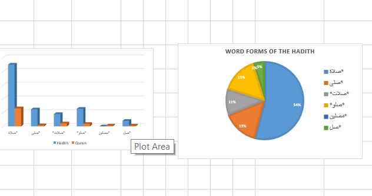

Representations of “الصلاة”
Arabic digital humanities · Comparative corpus analysis
- Context
- Arabic digital humanities research
- Project status
- Comparative corpus study
- Tools & methods
- AntConc · Excel · Arabic text analysis

Research question
A comparative study of how prayer-related word forms and contexts appear in the Quran and the supplied Sahih Al-Albani corpus. The project combines frequency analysis, collocations, and contextual interpretation.
Method
Used AntConc for keyword and concordance analysis, Excel for tabulation and charts, Quran.com for Makki/Madani categorization, and Ayat with Al-Saadi tafsir for contextual reading. Related forms were grouped using wildcard searches; selected expressions and related terms were excluded to define the study’s scope.
Reported findings
The final table reports 96 occurrences across the selected Quran keyword groups: 56 in Madani surahs and 40 in Makki surahs. The same grouping yields 416 occurrences in the supplied Hadith corpus. These are study-specific grouped counts, not universal counts of a single exact word.
The study interprets the Quranic contexts as broader in meaning and the Hadith contexts as more focused on prayer practice and detail. This is the report’s qualitative interpretation, bounded by the selected corpora and exclusions.
Limitations
Arabic morphology, polysemy, exclusions, and the choice of Hadith collection affect the findings. The report and presentation disagree on the preliminary number of variations (23 versus 26); the shared final grouped frequency table is used here.
More media +


Resources
Original project documents.